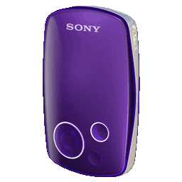
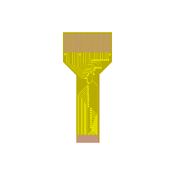

Patch your Network Walkman!
This site offers you the ability to patch your Sony NW-A1000's firmware to work with standard SSD1327 displays!


To connect a normal SSD1327 display, you need a custom flex PCB. Either make it yourself from the files published here, or buy a new screen from me directly.
Please select the NW_A1000.UPG file to patch
>> DOWNLOAD! <<